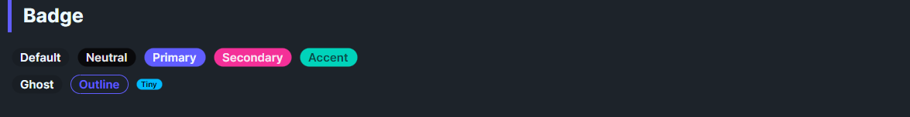

DaisyBadge is a compact label for counts, statuses, or tags. It supports 10 color variants, 4 size presets, and an outline mode for low-emphasis contexts. Works standalone or nested inside other controls (e.g., buttons, lists) to highlight small bits of information without overwhelming the layout.
| Variant | Description |
|---|---|
| Default | Neutral gray fill with contrasting text; fits most backgrounds. |
| Neutral | Muted neutral tone for secondary tags. |
| Primary | High-emphasis brand color. |
| Secondary | Alternate brand color. |
| Accent | Highlight color for special items. |
| Ghost | Subtle neutral fill; minimal visual weight. |
| Info | Informational blue tone. |
| Success | Positive/confirming green tone. |
| Warning | Cautionary amber tone. |
| Error | Critical/destructive red tone. |
| Size | Approx. Dimensions | Use Case |
|---|---|---|
| ExtraSmall | 12px height, 4px horizontal padding, 8px text | Tiny dots/counts inline with text |
| Small | 16px height, 6px padding, 10px text | Compact chips for dense lists |
| Medium (default) | 20px height, 8px padding, 12px text | General-purpose badges |
| Large | 24px height, 12px padding, 14px text | Emphasized tags or hero labels |
| ExtraLarge | Falls back to medium metrics | No additional styling in theme |
| Property | Effect |
|---|---|
IsOutline=True |
Makes the badge transparent with a colored border and matching text. Border/text color follows Variant (Primary/Secondary/Accent) or uses base content color for Default. |
<!-- Basic badge -->
<controls:DaisyBadge Content="New" />
<!-- Color variants -->
<controls:DaisyBadge Content="Primary" Variant="Primary" />
<controls:DaisyBadge Content="Info" Variant="Info" />
<controls:DaisyBadge Content="Error" Variant="Error" />
<!-- Outline style -->
<controls:DaisyBadge Content="Outline" Variant="Primary" IsOutline="True" />
<controls:DaisyBadge Content="Ghost" Variant="Ghost" IsOutline="True" />
<!-- Sizes -->
<StackPanel Orientation="Horizontal" Spacing="6">
<controls:DaisyBadge Content="XS" Size="ExtraSmall" />
<controls:DaisyBadge Content="Small" Size="Small" />
<controls:DaisyBadge Content="Medium" Size="Medium" />
<controls:DaisyBadge Content="Large" Size="Large" />
</StackPanel>
<!-- Inside a button -->
<controls:DaisyButton Variant="Ghost" Content="Messages">
<controls:DaisyBadge Content="5" Variant="Error" Size="Small" />
</controls:DaisyButton>
<!-- Circular status dot (explicit sizing) -->
<controls:DaisyBadge Variant="Success" CornerRadius="6" Padding="0"
Width="12" Height="12" MinWidth="12" MinHeight="12" />Info/Success/Warning/Error with matching semantic contexts (errors, confirmations, cautions).When you set explicit sizing properties (Width, Height, MinWidth, MinHeight, Padding, CornerRadius), the badge respects those values instead of using token-derived defaults. This is essential for:
Width="12" Height="12" MinWidth="12" MinHeight="12" CornerRadius="6" Padding="0" for a perfect 12px circle.Without explicit MinHeight, the badge uses the Size preset's token value (e.g., 20px for Medium), which may be larger than your explicit Height.